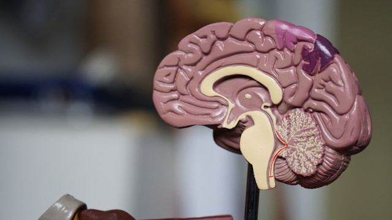

Sağlık Haberleri
Anasayfa
Gündem
Ekonomi
Yaşam
Sağlık

Wall Street Journal'ın (WSJ) yayımladığı haberde implantın, Parkinson hastalığından muzdarip Jeffrey Keefer'a takıldığı aktarıldı
71 yaşındaki Keefer'ın hastalık nedeniyle ameliyata girdiği, cerrahi operasyon öncesinde de doktorların implantı beyninde denemesi için izin verdiği belirtildi.
Precision Neuroscience firmasının geliştirdiği Layer 7 Cortical Interface adlı implantın üzerindeki elektrotlar, Keefer'ın beynine bağlandı.
İmplanttaki çipler, beyinden gönderilen sinyalleri toplarken, bunlar kablosuz bağlantı aracılığıyla yapay zeka destekli bir programa gönderildi.